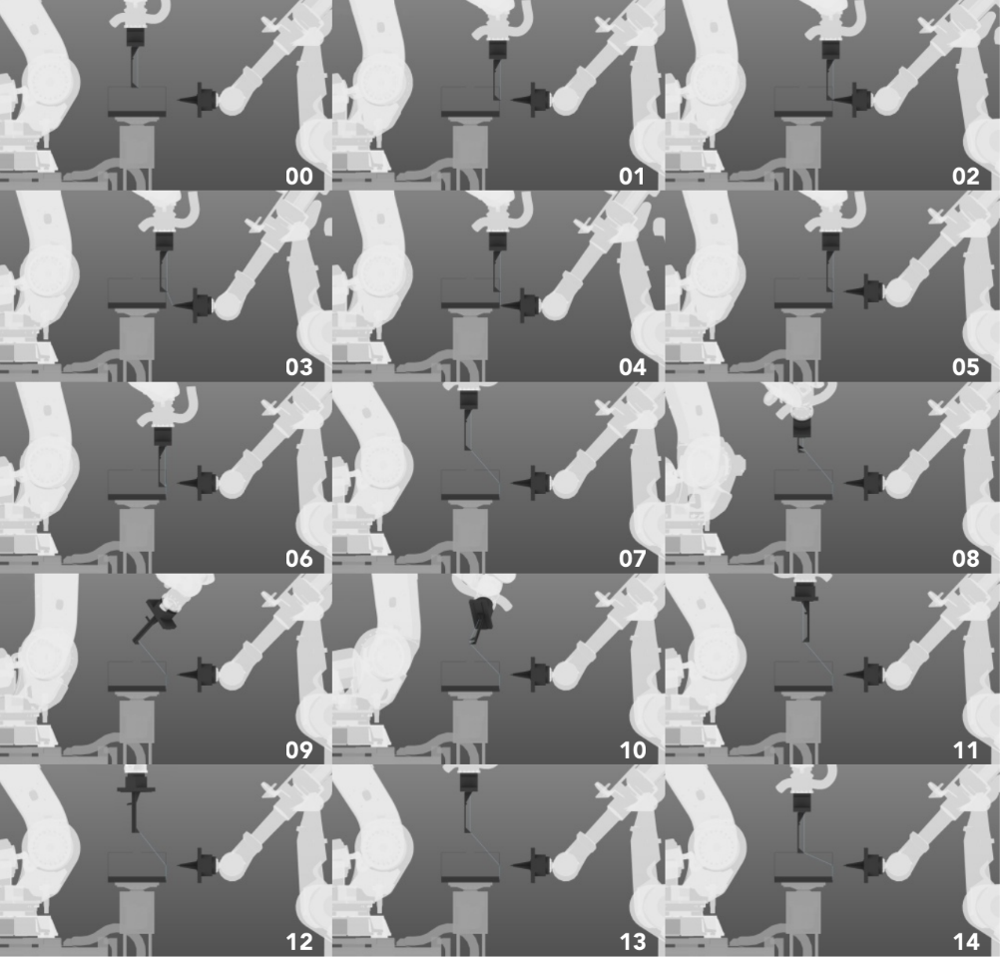

Collabrative Weaving is a robotic research/fabrication project that proposes a system that
utilizes robotic weaving based on a real-world object. This project was a collaboration between
Nick Coppula and Samuel Losi. The project's form has a complex, spatial interior rather than a
regulated exterior. This makes it distinct from many precedent projects which heavily rely on
robotically woven structures aptly described as “shells”. The collaborators proposed a system
of weaving that is adaptable and builds upon the existing formal language surrounding
robotically woven structures. Inverted weaving was the development of an inside-out approach
to weaving where the basic frame becomes external and the complexity becomes internal.
This process required collaboration between two robots and was written in RAPID and
HAL for grasshopper. The ABB 4400 robot moves the material to a position inside the frame
and the ABB 6640 robot loops the material onto a fastening system on the exterior of the
frame. This robotic collaboration enables the internal complexity of weaving while maintaining
a regular external frame geometry, which is then expressed by repeatedly bringing numerous
strands back to a set of fixed positions.
This project was designed in Spring 2020, during remote schooling.
